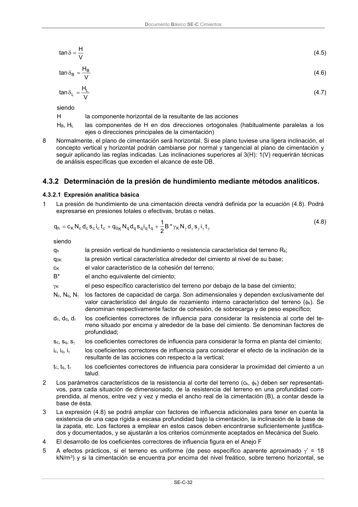

DB-SE-C · 4.3.2 Determinación de la presión de hundimiento mediante métodos analíticos. · versión 2019-12-20 · capa oficial
Formatos: JSON compacto · Markdown · PDF fuente
Ámbito del documento · texto del ámbito · documento y tablas
ID técnico a0074 · PDF pág. 37 · jerarquía no validada por persona · contrastado con el literal de la página 37 (candidato tipográfico); no validado por persona · padre: raíz
4.3.2 Determinación de la presión de hundimiento mediante métodos analíticos.

PDF fuente redistribuible: copia fiel enlazada en esta página (SHA256 verificado).